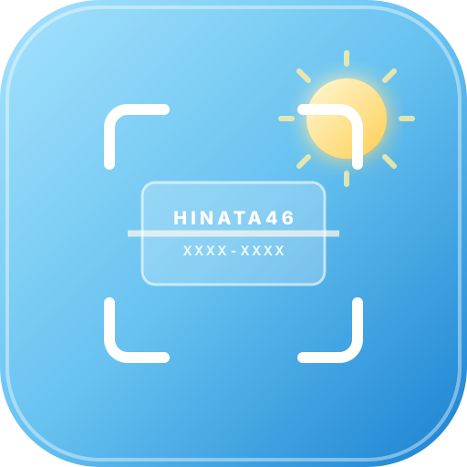

連続スキャン（まとめ打ち）
読み取り後、確認なしで次々と自動ストック
カメラ準備完了（QRコードは自動検知）
模擬シリアル応募券プレビュー
手元にCDがなくても、本物そっくりの日向坂46応募券でスキャンの精度や登録フローを検証できます。

手元にCDがなくても、本物そっくりの日向坂46応募券でスキャンの精度や登録フローを検証できます。
Android Chromeでは「⚡ 【超軽量】一括10件入力コード」をご使用ください。
javascript:」が自動で消去されます。